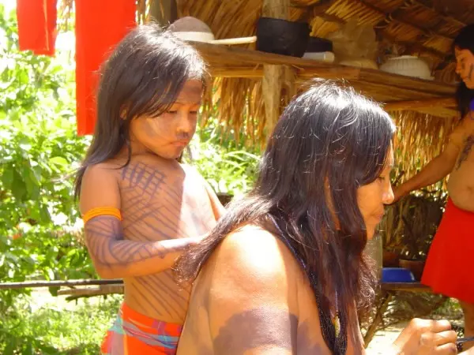

Exhibit 1: Kusiwa Body Painting
Indigenous Group: Wajapi
Location: Northern Amazonian region
Description: The body art uses red dye from the roucou plant mixed with scented resins, the Wajapi people pain geometric figures, and other animals like jaguars, snakes, butterflies, and fish
Significance: The body art servs as a communication system that tells storys such as myths, and masses down social, religious, and identity across generations